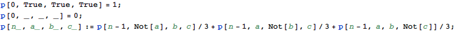
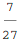
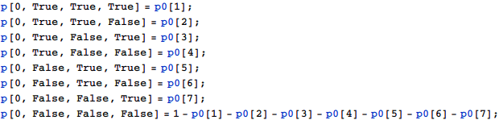
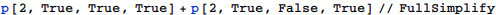
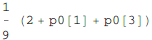
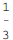
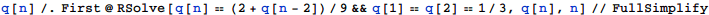
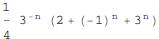

東京大学 2004年 理科 第6問
問題
片面を白色に，もう片面を黒色に塗った正方形の板が 3 枚ある．この 3 枚の板を机の上に横に並べ，次の操作を繰り返し行う．
さいころを振り，出た目が 1，2 であれば左端の板を裏返し，3，4 であればまん中の板を裏返し，5，6 であれば右端の板を裏返す．
たとえば，最初，板の表の色の並び方が「白白白」であったとし，1 回目の操作で出たさいころの目が 1 であれば，色の並び方は「黒白白」となる．さらに 2 回目の操作を行って出たさいころの目が 5 であれば，色の並び方は「黒白黒」となる．
(1) 「白白白」から始めて，3 回の操作の結果，色の並び方が「黒白白」となる確率を求めよ．
(2) 「白白白」から始めて，n 回の操作の結果，色の並び方が「白白白」または「白黒白」となる確率を求めよ．
注意：さいころは 1 から 6 までの目が等確率で出るものとする．
解答
(1)
白をTrue、黒をFalseとして表し、例えばn回サイコロを振った時に「白黒白」となる確率をp[n,True, False, True]というように表すとする。

3回操作後の求める確率は

(2)
初期条件を一般化してp0[i] (i=1,2,3,...,8)とする。であることに注意し

2回サイコロを振って「白白白」または「白黒白」となる確率は

となる。p0[1]とp0[3]はそれぞれ「白白白」「白黒白」の初期確率であるので、求める確率をq[n]とすると、q[n]==(2+q[n-2])/9と表せる。また


なので、q[1]==q[2]==1/3。求める確率は漸化式を解いて

となる。